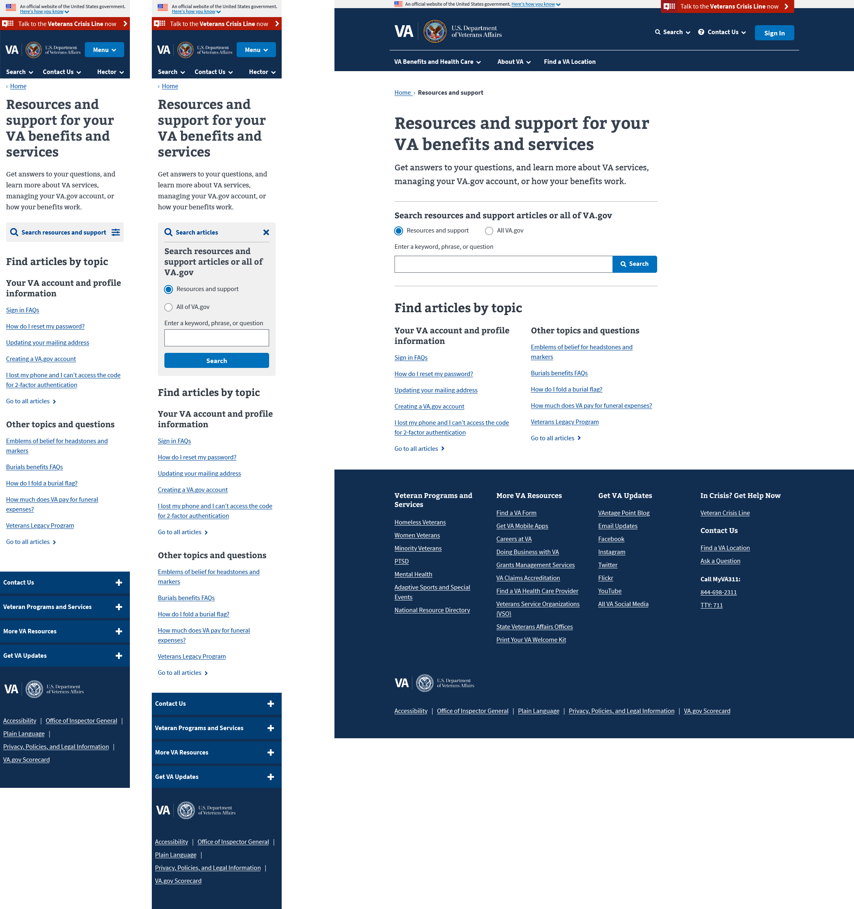
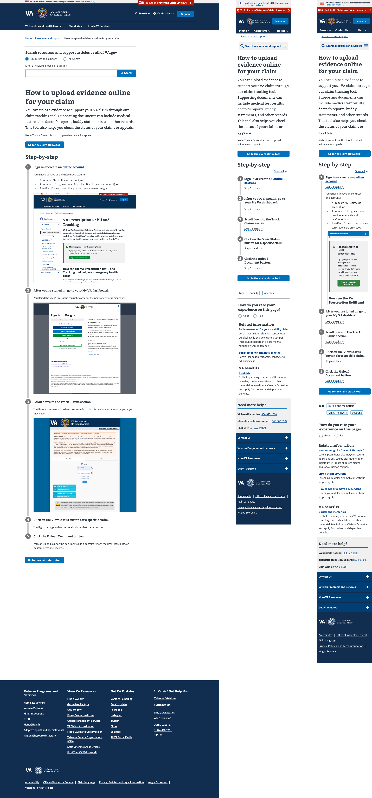

VA Online Scheduling Tool
The problem
The previous VA Online Scheduling Tool lived on a separate URL, didn't us the VA.gov design system, and most importantly, delivered a broken UX to Veterans.
The solution
Migrate the legacy tool onto the new VA.gov tech stack.
My role
My responsibilities included working with multiple stakeholders to gain alignment on project goals, including getting buy-in from different departments inside of VA. I worked with contractors and engineers to I worked with expert content strategists and product owners to develop various design templates (e.g. a FAQ page, a Questions and Answers page, etc) that works with the VA design system. These templates were designed from scratch, using previous VA websites as samples. We worked together to provide documentation on how they are built, how they should be used (including guidance in the Drupal authoring experience), and how they will improve usability.
View a mural board of all of the templates.
Mobile and desktop design for the landing page
Mobile and desktop design for the step-by-step template
